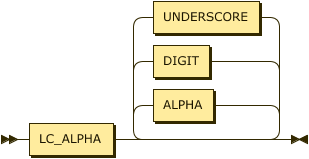

Relations & Facts
While relations are a key aspect of the Datalog language there is no actual production for relation in the syntax. This is because the syntax instead expects a set of facts expressed and where those facts share the same label, and are schema compatible they comprise a relation. Each relation has a schema that defines the number of attributes, their types, and optionally their labels. The number of attributes is often termed the arity of the relation or of a fact.
In some literature, where Datalog is analyzed from a model theoretic view, the term sort is more often used than schema. In either case the meaning is equivalent. See Wilfred97 and AbHuVi94.
Facts are expressed in the form of ground § Atoms where all § Terms are constant, and so they have a specific production rather than a constrained form of the atom rule. A predicate is the identifying label shared by a relation and its facts.

fact ::= predicate ( "(" constant ( "," constant )* ")" )? "." ;
A predicate is a string of characters that MUST start with a character from the Unicode category Ll.

predicate
::= LC_ALPHA ( ALPHA | DIGIT | UNDERSCORE )* ;
Errors
It is an error to add a fact that is schema incompatible with an explicitly declared extensional relation.
.assert human(string).
human(22).
%% ==> ERR_INCONSISTENT_FACT_SCHEMA
It is an error to add a fact that is schema incompatible with an implicitly inferred extensional relation. In this case the first occurrence of human had a string value and so a relation was inferred with a single string attribute.
human(socrates).
human(22).
%% ==> ERR_INCONSISTENT_FACT_SCHEMA
Some cases may not be so obvious, especially with numerics. The value 22 is inferred to be integer, the value 22.0 is inferred to be a decimal, and the value 22e1 is inferred to be a float. Therefore, the example below causes an error.
human(22). % integer
human(22.0). % decimal
%% ==> ERR_INCONSISTENT_FACT_SCHEMA
It is also an error to assert facts where the label identifies an intensional, rather than extensional relation.
.assert human(string).
.infer mortal from human.
mortal(22).
%% ==> ERR_PREDICATE_NOT_AN_EXTENSIONAL_RELATION
In this final example the error is caused by processing in strict mode where all relations MUST be declared via processing instructions before use.
.pragma strict.
human(socrates).
%% ==> ERR_PREDICATE_NOT_AN_EXTENSIONAL_RELATION
Examples
The following demonstrates a simple fact denoting that the constant brooke representing some
individual is the parent of some individual represented by the constant "Xerces".
parent("Xerces", brooke).
In a graph program an edge can be represented as an edge with a source vertex, target vertex, and weight.
edge(src, tgt, 100).